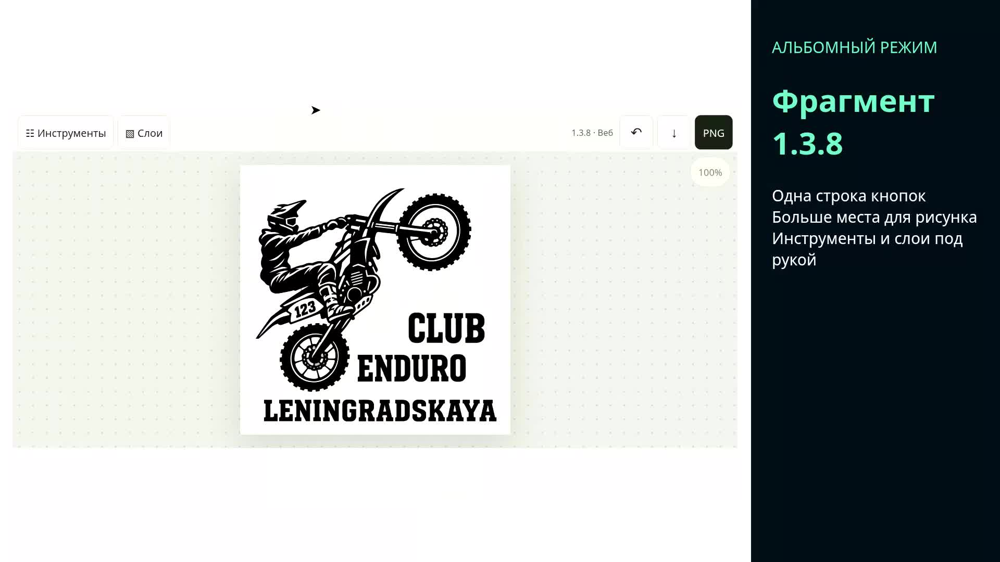

Вернуться в редакторВерсия 1.3.8: удобный альбомный режим
В альбомном режиме телефона кнопки собраны в одну строку, название и служебные подписи скрыты. На 844×390 высота изображения выросла со 168 до 314 пикселей. Основной веб-редактор и APK используют одинаковые файлы.
- Поверните телефон горизонтально. Вверху остаётся одна строка кнопок, название программы скрыто, изображение занимает почти всю оставшуюся высоту.
- Откройте и закройте «Инструменты» и «Слои». Настройки доступны через страницы панелей.
- Приблизьте изображение двумя пальцами. Кнопка с процентами возвращает картинку целиком.
- Верните телефон вертикально: обычный интерфейс восстанавливается. Проверьте то же в APK 1.3.8.

26 секунд · Silero Ксения · проверка в браузере